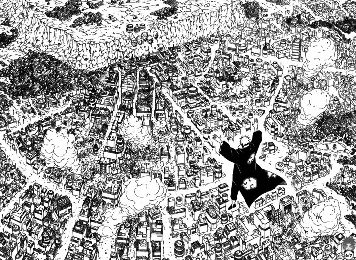

Cuando me aburro de leer otra cosa que me gusta hacer es ver anime
No solo los autoes de libros son buenos para hacer frases, en sus obras muchos mangakas
exponen sus filosofias de vida, como en la siguiente frase de kisimoto (autor de naruto)
"No vivas con falsedades ni miedos, porque terminarás odiándote a ti mismo."
Generos que me gustan
Shonen
Eiichiro Oda, Akira Toriyama, Masashi Kishimoto
Arte del manga de Naruto (universo de ninjas) realizada por
Masashi Kishimoto
Terror
JunjiIto,Sui Ishida, Osamu Tezuka
Animes que vi este año
Demon Slayer
Chainsaw Man
One Punch Man
Animes que tengo pendientes por ver
Me gustaria verlos anets del dia
Jujutsu Kaisen
Spy x Family
Vinland Saga
Existen piezas de anime hechas orquesta con sonidos maravillosos, aqui un pequeño ejemplo
Si te gustaria leer el MEJOR MANGA de la historia deberias ir al siguiente lugar